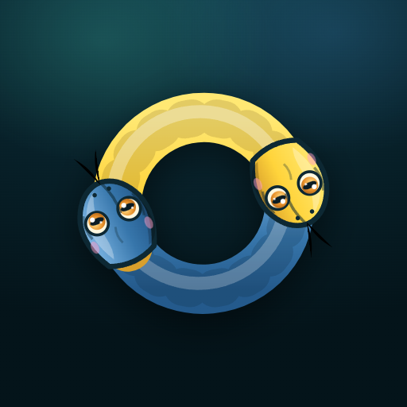
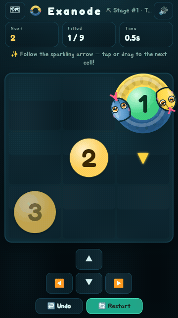
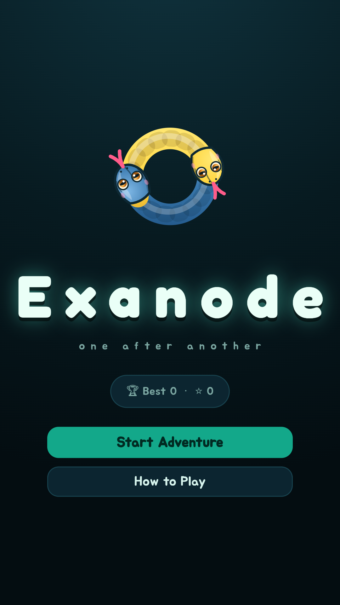
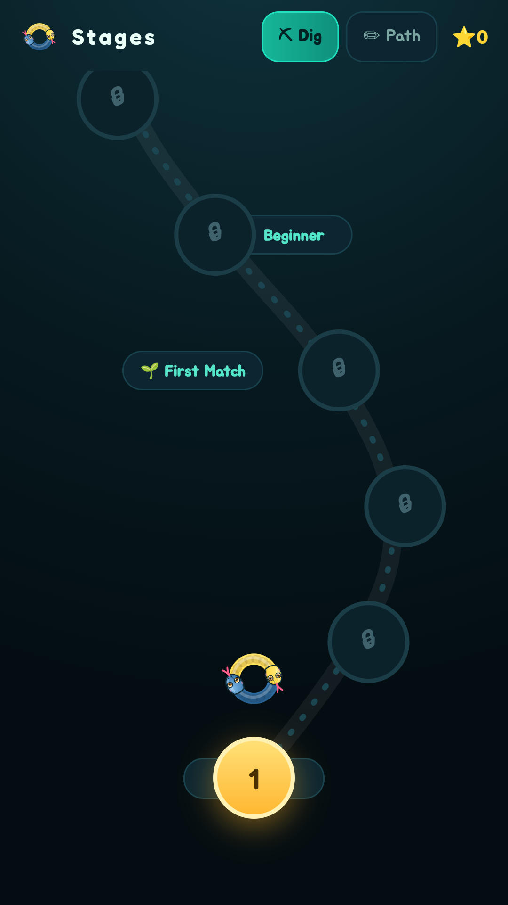
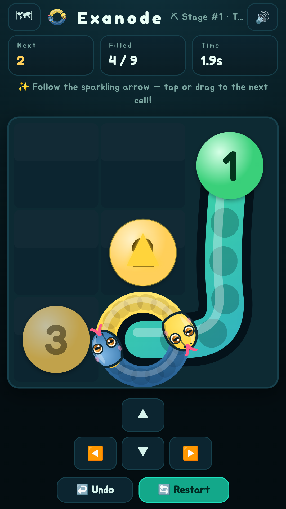
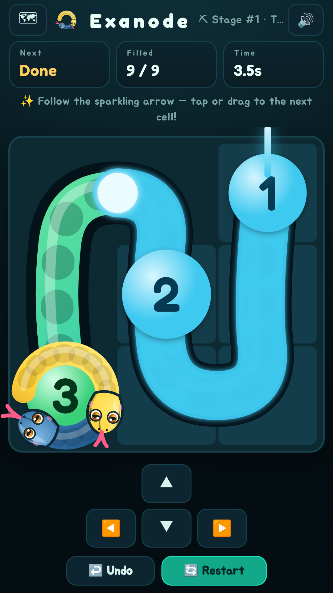

숫자를 1 → N 순서대로 밟는 귀여운 격자 퍼즐.
지나간 칸은 다시 못 지나가요. 갇히면 게임 오버!





Exanode is a cute grid puzzle: trace the grid with a snake cursor, stepping on the numbers in order 1 → N. You can't re-cross a cell you've passed, and if you get boxed in, it's game over. Two modes (Dig / Path), 20 languages, completely free, no ads, no data collected, offline play. A puzzle first hand-drawn on graph paper 30 years ago — now reborn as an app, built in public.